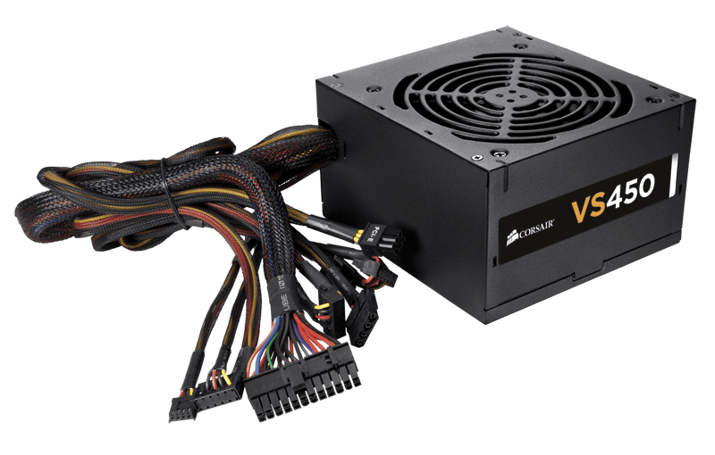

Central Processing Unit(CPU)
The CPU or Central Processing Unit is what most people call the brain of the computer. The CPU processes all information, programs and data that a computer recieves. There are also processor the say they are multicore which mean each core is another processor.

Random Access Memory(RAM)
Random Access Memory or RAM is where are short term imformation is stored, any program or information that is not need to be saved on a hard drive. Once the computer is turned off everything on the RAM stick is deleted. This can also be known as or called a Volatile curcuits becuase the memory is based on the power the chip receives, no power means no memory.
Power Supply Unit(PSU)
The Power Supply Unit is the source in which the computer gets its power from. The PSU takes AC power from an outlet in your home and converts the high voltage to a usable low voltage (DC) the computer needs. The size of the PSU all depeneds on the amount of power you computer takes and needs.
Hard Disk Drive(HDD)
The Hard Dirve Disk is the main memory storage for a computer. Anything that is downloaded from the internet or a a file saved to the computer is saved onto the harddrive unless move to somewhere else. Hard drives come in a range of sizes from more than 1000GB or 1TB. The generally speaking way on how the harddrive is working is that the rapid spinning of the disk and the magnetic coast on the disk allows for the system to read and write information and stores it.
BUS
In terms of computers bus is used to refer to the systems of communitcation within the computer hardware and the transfer of data that happens between the all parts of the computers hardware. The BUS system is whats holding everything together and allow for the transfer of all data between each seperate unit.

Peripherals
For a computer there are many add-ons to make the either easier or more fun to use. Some of the simplest and most important peripherals include the monitor, keyboard and the mouse. The monitor is use for the user to see everything that the computer is process and showing. The Keyboard and mouse are used to make it easier for the user to navigate through the computer.